The Random Terrain Generator got a full overhaul. Pick a pattern - Islands, Continents, Central Seas, Land Mass, Rivers, River Raid, or the new Maze - and every pattern now exposes its own shape controls (island counts and radii, river width and count, lake spread, and more) as tidy count / min / max rows.
New symmetry mirrors or rotates the whole world for fair-play multiplayer maps, and an accessibility mode lays obstructions as open scatter, carved roads, or a full labyrinth. Drop in flat landing drop zones, pick the shore solver, and scatter obstructions and decorations straight from the template library - or just hit Surprise Me! for a balanced world, seed and all. Every planet is still reproducible from its seed, and the run never freezes the cockpit. Let's make some maps!
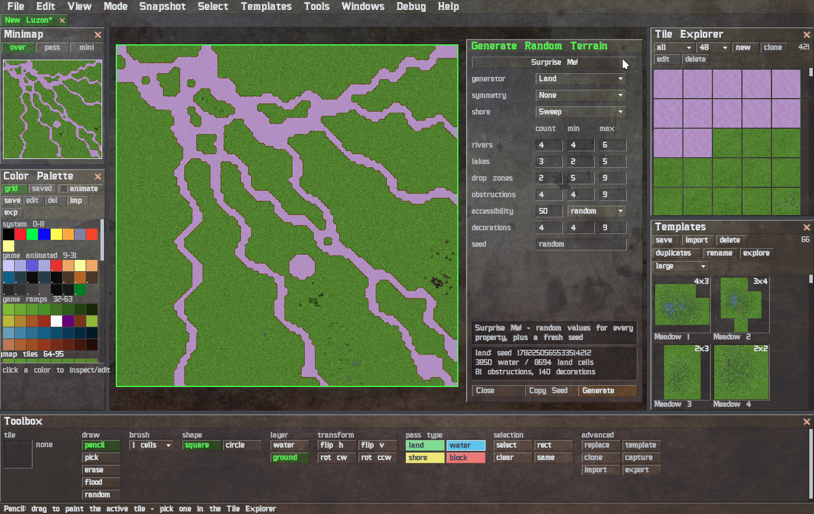
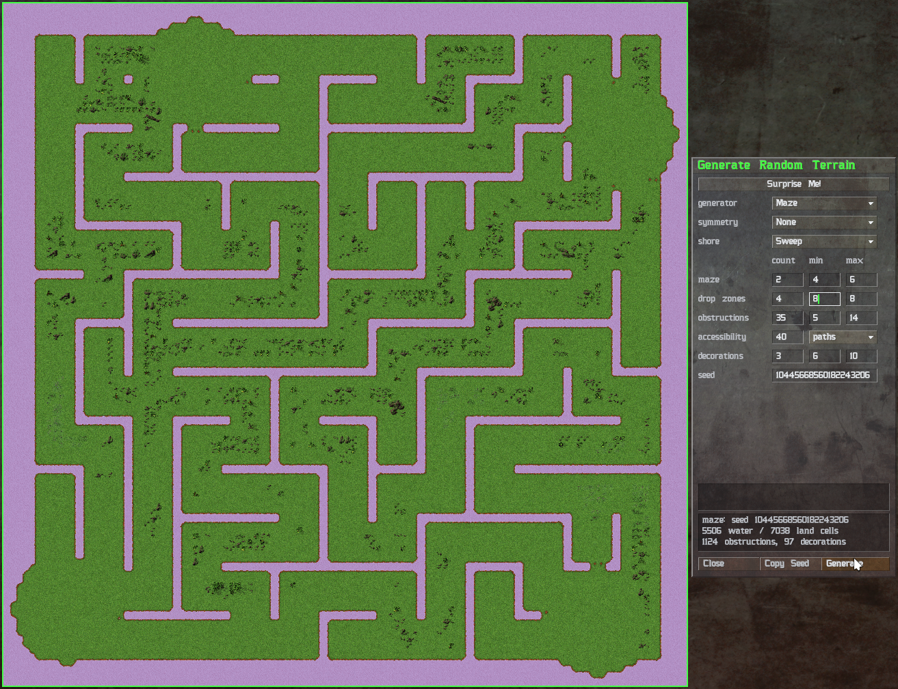
Commanders, I'm pleased to present a new release packed with improvements and bug fixes. All known terrain patterns (templates) are now shipped for every classic tileset. The classic map projects have been updated, and all asset passage tables have been unified. Consult the embedded User Manual for more information on how to use the latest "Utility" features.
The "Utility" learned to re-projectify maps. Aim File → Import WRL… at a world built from the standard tiles. Choose the tile packs to rebuild it with, and the editor matches every tile back onto your tilesets. Rotations and mirrors are recognized, so a tile laid down four ways still resolves to one pack tile with a transform; animated coastal water and shore masks are looked straight through, so a coastline matches no matter which frame it was frozen on. On the original 24 worlds it re-finds 97-100% of every tile.
What doesn't match isn't lost. The unmatched tiles are listed for review and you rule on them: abort, leave them behind (ignore), or import them - either bundled into the project itself or folded into your user tileset, deduplicated so re-imports never stack the same tile twice. A flat WRL becomes a layered, fully-editable project: auto-shore, variants, and repaints all apply again.
Every cockpit needs a manual, and now there is one. Help → User Manual opens the full handbook in your browser - screenshots and all - generated straight from the source, so it never drifts from the editor it documents. The same menu runs you out to the project's website and its source on GitHub, with an About panel to keep the credits.
Small comforts for a long campaign. The File menu now keeps a Quick Load list of your last ten opened maps, while the shipped starter worlds moved to their own Template Maps shelf - each labelled with its name and, right-aligned, its file. And the Tile Explorer and Templates Explorer finally remember their preview size between sessions, so the cockpit comes up the way you left it.
Let's make some maps!
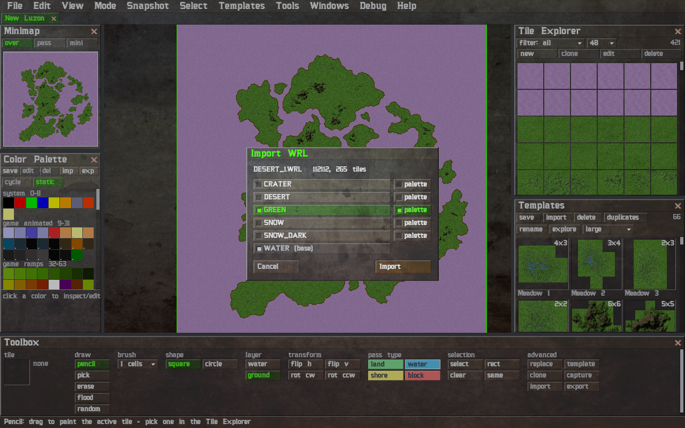
When opening WRL files made for different M.A.X. clones, there might be a problem with palette. Some clones decoupled game palette from map palette, allowing to customize all 256 colors. This release comes with the tool to convert the palette to original M.A.X. compatible one.
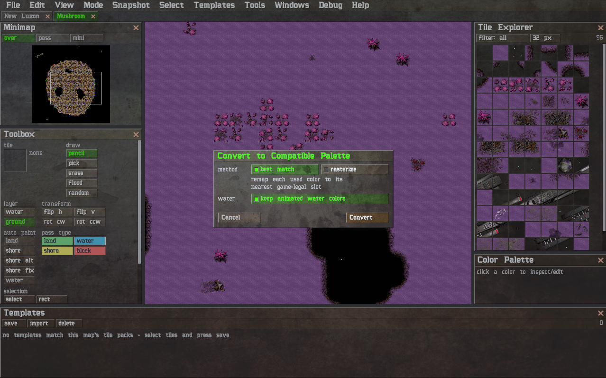
Commanders, big news: the Map Editor has been rewritten from scratch as a native Rust application (wgpu + winit). No browser, no web stack - just one small binary that talks straight to the GPU.
The Tauri prototype that carried this project for two years is honorably discharged. It taught us everything about WRL files, palettes, and shores - and the new editor inherited all of it. The first native release, v0.4.0, is around the corner: portable zips for Linux and Windows. Unzip, run, draw planets - settings live right next to the binary, no installation, no registry, no traces.
This is no longer an announcement - the editor edits:
The long-promised toy has landed: the Random Terrain Generator. Pick a pattern - Islands, Continent, Land Mass, or River Raid - set the water / obstruction / decoration balance, and let it roll. Every world comes from a seed, and the seed is printed with the result: like a planet? Write the number down and grow it again, any time, on any machine.
Mountains and forests stamp as whole formations mined from the original maps - not single-tile confetti - and the coastlines run through the auto-shore solver (pick the method you prefer). A progress bar tracks the run, the editor stays responsive throughout, and Abort rolls the map back as if nothing happened. Reroll until the planet feels like home.
Terrain editing grew a whole construction division. Drag the select tools over your map (freehand or rectangles - Shift adds, Ctrl subtracts) and a thick green survey line traces whatever you marked. From there: copy, cut, paste - pasted tiles ride under the cursor as a translucent ghost, click to deploy, keep clicking to deploy again. Forests in five clicks.
Better yet: save a selection as a template. The Templates Explorer shows every template as a live thumbnail - the editor ships with formations mined from the original maps, and your own creations are plain JSON files you can share with other Commanders. Templates know which tile packs they need, so they only offer themselves on maps that can host them.
The cockpit itself got a full refit, and it shows:
mme.ini,
where any console command can be given a key;The file loaders (WRL, projects, images) went through a security review and now refuse corrupt data politely - with an error dialog that tells you what's wrong. Paranoia is a virtue when you open files from the extranet.
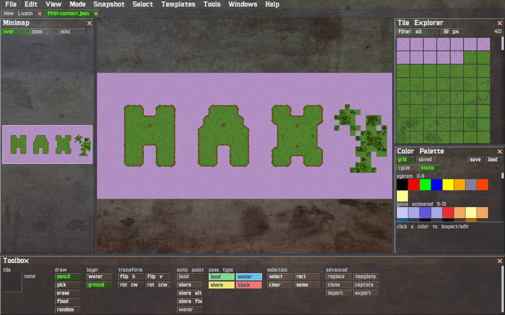
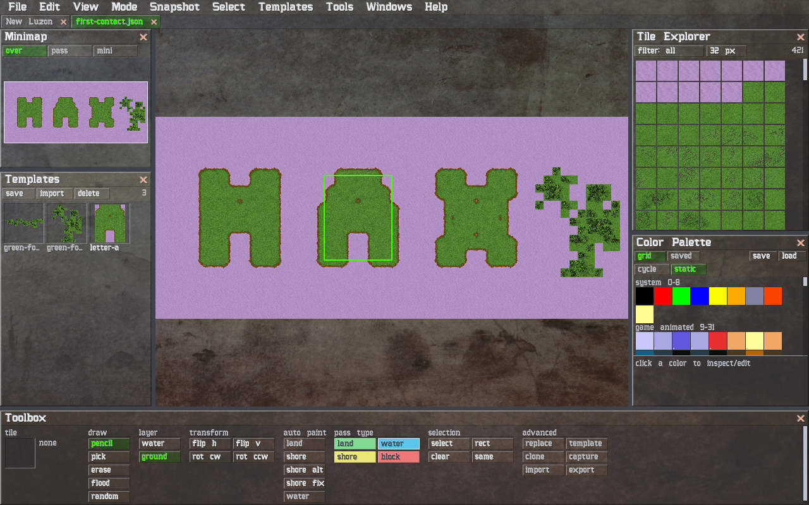
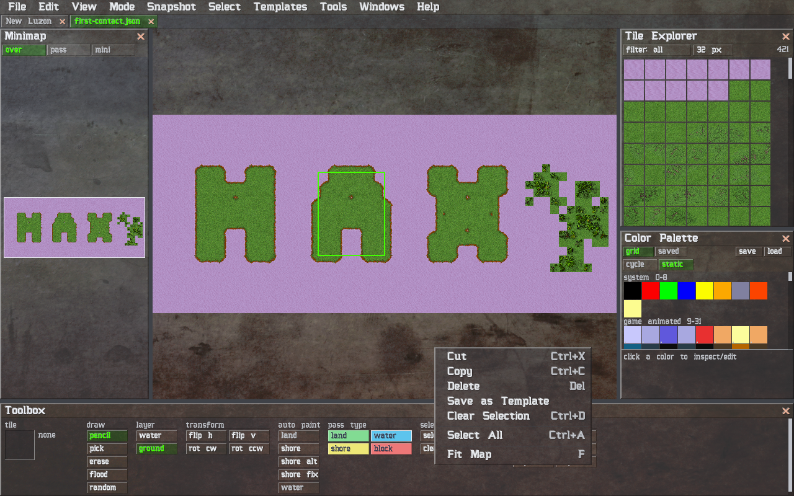
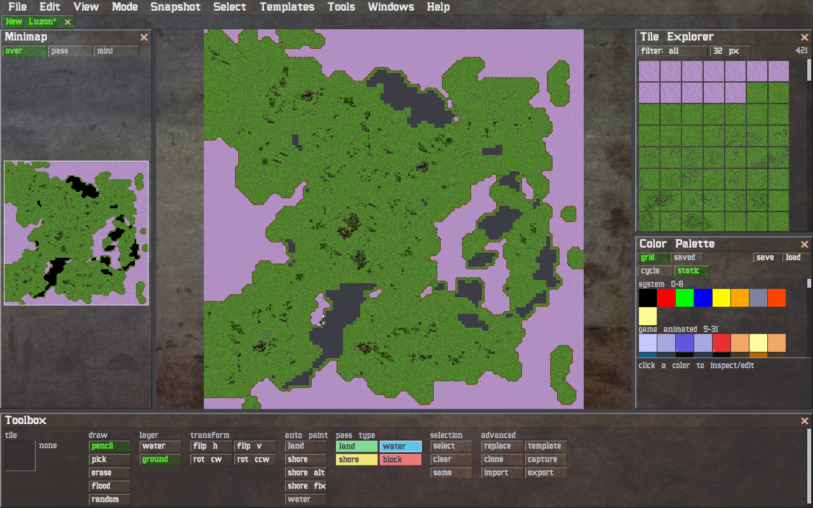
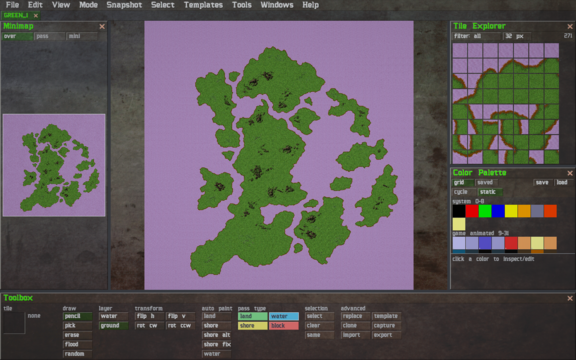
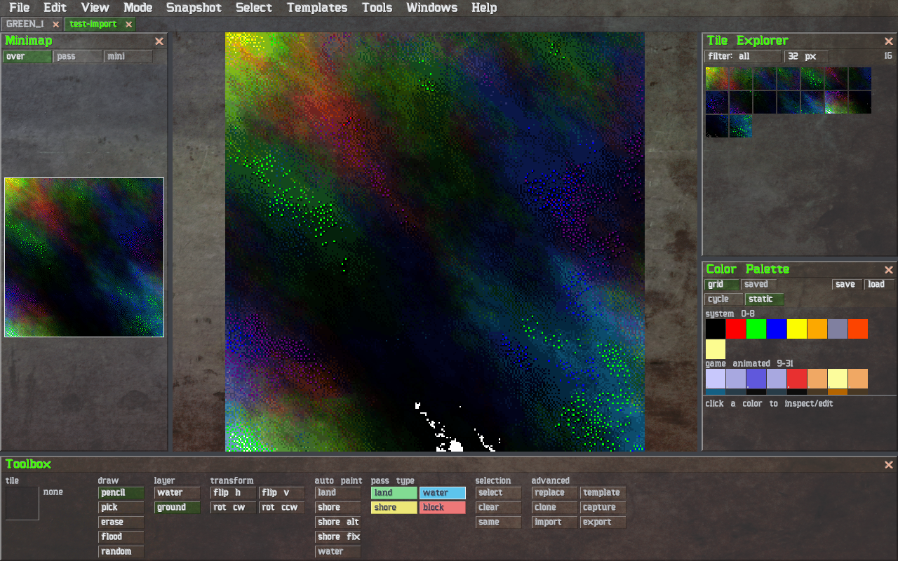
About that first screenshot: every click in this editor is a console command, which means a map can be a script. So we let the editor's resident machine intelligence write one - it chose a green world, painted an archipelago that spells its favorite three letters, ran the shore solver over the coastlines, and saved the letter A as a template for good measure. Seed 1996, of course.
Let's make some maps!
After another long break, the "utility" is back on track, and preparing for the next release: v0.3.0!
The official name is changed to: M.A.X. Map Editor!
Current focus will be on reviewing the reactive system used for the UI and frontend app state management.
Next, the backend Rust code will be reviewed and modularized. All applicable logic will be moved to asynchronous backend tasks for better performance and security.
The rendering system will be improved to support more layers and types of objects. This will allow to use not only the simple tiles, but also additional objects like trees, buildings, and other.
Finally, the map project file format will be redesigned to support the new features and improvements.
That was a long break, but during that time, a new related project was born: the M.A.X. Map Manager (MMM).
Work on MMM was a great learning experience.
It helped to solidify the knowledge about Tauri and Rust.
The "Utility" will benefit from that knowledge.
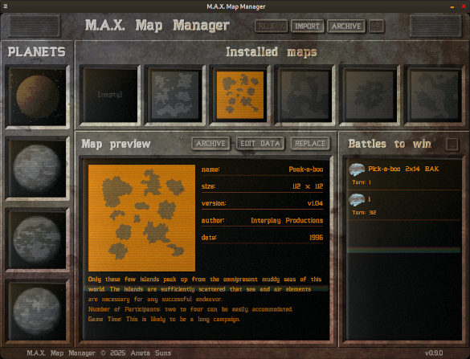
After a long break, the "utility" is back with a new update.
The new security measures have been implemented to ensure that JavaScript code is not able to access arbitrary files on the user's filesystem.
The new tile system was developed to allow more flexibility in the map creation process.
The new system allows the user to rotate and flip the tiles. Also, the new tile system provides matching data for the auto-shore feature and random map generator.
The shore tiles have masked out water (except shore waves) which will allow correct rendering for any transformation of shore tiles and underlaying water tiles.
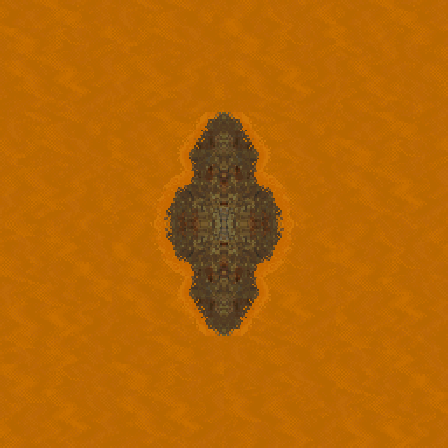
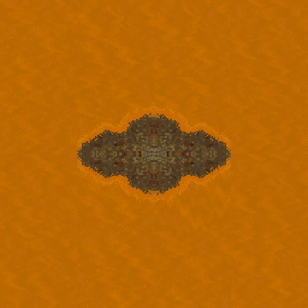
The setup process will be as easy as providing valid M.A.X. game path.
The editor will be extensible with asset packs.
The asset packs will contain new tile sets and palettes.
The map project file will contain references to the used asset packs. As an option it will be possible to save map project with embedded asset packs.
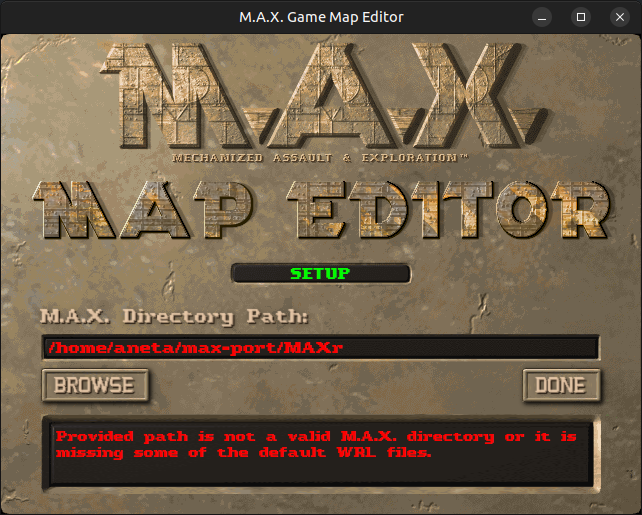
The "utility" is being transferred to the Tauri App ecosystem for further development and distribution.
The progress made before migration to TypeScript, WebGL, and Tauri still needs rework, so stay tuned. Expect upcoming updates to contain actual "utility" work releases.
This update comes with the v0 release that will be the baseline for the "utility".
The upcoming releases will be available here:
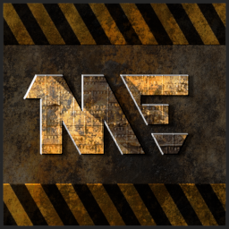
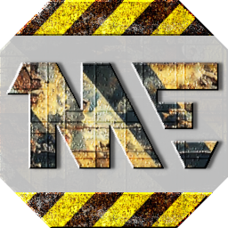
The rendering process transition is in progress. Switching from canvas rendering to WebGL 1.
This update will also ensure a smoother mapping experience on weaker machines, even with caustic animations enabled! Also, less CPU power will be required to redraw the map, for only one texture will be rendered using GPU. That should ease the power consumption, so we won't need the power station farm to power the whole process of materializing our creativity.
This update comes with a WebGL demo of the palette, tile set, and the tile map usage for rendering the map.
As of now, all the work on the "utility" will be publicly available as an open-source project on this GitHub:
All current achievements are in a process of transition before they can go public. This will ensure that no proprietary assets are published with the source code; the source code is being cleaned up and transformed to TypeScript for easier maintenance and development.
This update comes with a simple utility release, which converts the WRL files to JSON format. Optionally, it can export binary chunks and images for preview.
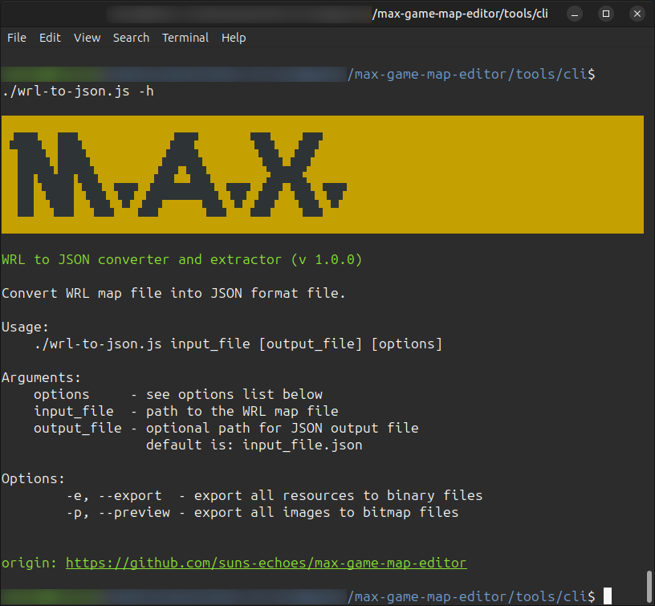
Here is an overview of the current work progress on the "utility" (sometimes referred to as the M.A.X. Map Editor). Information about related work can be found below.
Progress on the "utility":
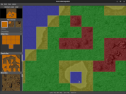
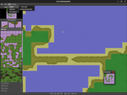
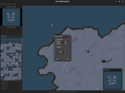
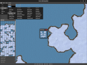
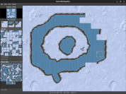
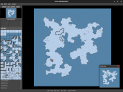
In addition to the main task, work is ongoing on related features, such as tile consolidation, grouping, and matching. This work will enhance the functionality of the 'utility' by providing the metadata required for auto-shore feature or random map generation.
Progress on related work:
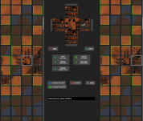
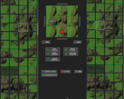
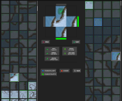
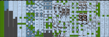
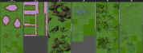
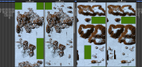
One day, a new M.A.X. Commander was assigned to explore distant star systems to find new habitable worlds. The worlds that no one had seen but many dreamed about. The Commander decided to utilize all means necessary to complete the task.
Finally, careful planning and gathering all available data about the known universe led to only one conclusion: it is very doubtful to find new compatible worlds using conventional methods. Determined, the Commander devised the ultimate plan.
The plan was to create a highly sophisticated "utility" capable of distorting the fabric of space and time, which would then be used to develop new habitable planets.
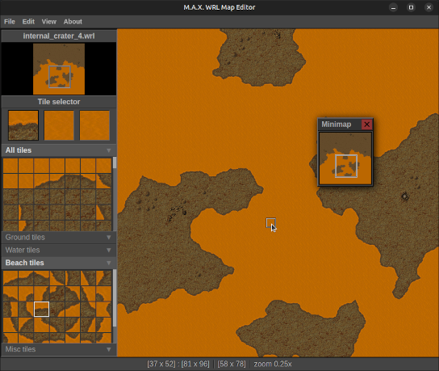